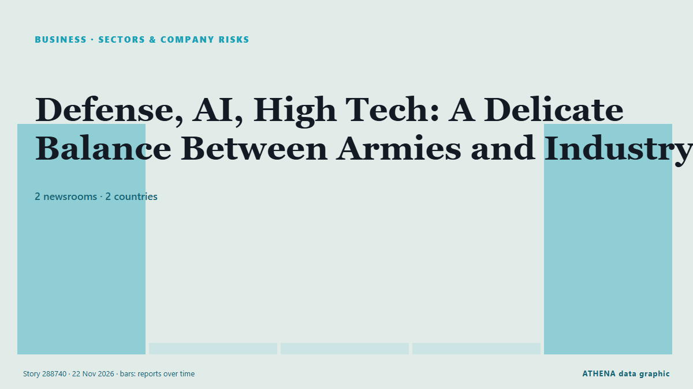

Entreprises et investissement
SponsoriséPrésenté par  Cybernetics and Artificial Intelligence Lab Welcome to the Cybernetics and Artificial Intelligence Laboratory, established at the Department of Business Administration of the National and Kapodistrian University of Athens. The lab is headed by Professor Dimitrios Thomakos. The lab aims to do research that can be published in top venues. Our research uses tools and methods of Artificial Intelligence, and lies in the following areas: - Forecasting - Decision making - Cyber security - Finance We are always looking forward to collaborating with exceptional students!
Cybernetics and Artificial Intelligence Lab Welcome to the Cybernetics and Artificial Intelligence Laboratory, established at the Department of Business Administration of the National and Kapodistrian University of Athens. The lab is headed by Professor Dimitrios Thomakos. The lab aims to do research that can be published in top venues. Our research uses tools and methods of Artificial Intelligence, and lies in the following areas: - Forecasting - Decision making - Cyber security - Finance We are always looking forward to collaborating with exceptional students!
Les titres sont affichés en anglais, tels que publiés.

Secteurs et risquesDefense, AI, High Tech: A Delicate Balance Between Armies and Industry
Defence, AI, high tech: a delicate balance between armies and industry. de Gulf News
| 9 nov. | 108 |
|---|---|
| 10 nov. | 121 |
| 11 nov. | 102 |
| 12 nov. | 96 |
| 13 nov. | 63 |
| 14 nov. | 38 |
| 15 nov. | 36 |
| 16 nov. | 99 |
| 17 nov. | 88 |
| 18 nov. | 87 |
| 19 nov. | 85 |
| 20 nov. | 58 |
| 21 nov. | 21 |
| 22 nov. | 6 |
Hazlewood: I was never close with Khawaja but we were both professional
Hazlewood suggested his limited interaction with Khawaja outside the team environment may explain why he was unaware of any discussions. de Sportstar
Iran advances in UN E-Government Development Index
Iran has climbed 14 places in the United Nations E-Government Development Index (EGDI), rising from 101st in 2024 to 87th in 2026, according to the UN website. de Tehran Times
UN Security Council deadlocked over Guterres’ successor
With just six weeks remaining in Antonio Guterres' term, the deadlock raises the risk of the UN being left without a successor when he steps down. de Free Malaysia Today
IND vs NZ: Eight wickets or 90 overs? Who blinks first in Wellington
India are eight wickets away from a historic win in Wellington, but a lifeless Basin Reserve pitch and two stubborn New Zealand batters stand in their way. de Times of India
GTA VI Earns Record $3.79 Billion Within 24 Hours
GTA 6 generates a record $3.79 billion in first-day sales, surpassing its predecessor and setting a new entertainment benchmark as excitement reaches Kurdistan. de Kurdistan24 (English)
Canada joins NATO innovation fund, promises ‘business as usual’ with US
But the investment is a pointed reaction to the Trump administration’s dwindling cooperation with its northern ally. de Defense One
Mohamad meets BN, PN reps to resolve MB-related issues
Barisan Nasional deputy chairman Mohamad Hasan also says any matter concerning the state administration must be carried out in accordance with its constitution and rule of law. de Free Malaysia Today
Motsepe leads CAF delegation to Nigeria for General Assembly
Mr Motsepe was received on arrival at the Presidential Wing of the Nnamdi Azikiwe International Airport by the Chairman of the National Sports Commission, Shehu Dikko. de Premium Times
Karnataka to make fresh bid for ST status for Kadugolla and Hattigolla communities
The State Cabinet, chaired by CM D.K. Shivakumar on November 19, decided to renew its recommendation to the Union Government after obtaining fresh evidence through a comprehensive ethnographic study. de The Hindu
Xi’s bay-area vision offers scope for cooperation despite US, Tokyo hurdles: analysts
Chinese President Xi Jinping’s call for a global association of bay areas signals a long-term economic vision to the United States and Japan, although geopolitical tensions and difficulty finding… de South China Morning Post
‘GTA 6’ Hits Massive $3.79 Billion in First-Day Sales
Crime pays: Rockstar Games’ “Grand Theft Auto 6” preorder and first-day sales reached $3.79 billion, the game developer announced Friday. de Variety
Shivo Tanzania’s Richard Ashby elected to ZATI board of directors
ZANZIBAR: Richard Ashby of Shivo Tanzania has been elected to the Board of Directors of the Zanzibar Association of Tourism Investors (ZATI), following the association’s Annual General Meeting (AGM)… de Daily News
Indonesia and China set out £47bn package of projects and investment plans
Agreements and proposals worth an indicative £47 billion were announced during APEC Economic Leaders' Week in Shenzhen, covering smart cities, manufacturing, energy and infrastructure financing. de The Scotsman
President Ilham Aliyev: Azerbaijan-Vietnam relations are of strategic importance
"Your (Vietnam's – ed.) rapid socio-economic development is known to the whole world, and a very good investment climate is very encouraging for many companies from different parts of the world,"… de AzerNews
Japan automakers to standardize parts, materials for efficiency
Japan's automakers will standardize specifications for some vehicle materials and parts to compete with overseas rivals, the Japan Au. de Mainichi (English)
CITEX 2026 Brings Together Over 100 Iranian Technology Companies
Tehran’s CITEX 2026 exhibition is showcasing homegrown technological innovations aimed at addressing urban challenges and improving public services. de Tehran Times
Honda, Toyota recall 1.6 million vehicles over Takata airbag rupture risk
WASHINGTON: Honda and Toyota Motor said on Friday they are recalling about 1.6 million cars, trucks and SUVs over a risk that Takata airbag inflators could rupture.Honda and Toyota... de Oman Observer
Peru's President Fujimori thanks Japan for support in addressing El Niño phenomenon
The President of the Republic of Peru, Keiko Fujimori, thanked Japan's Emperor Naruhito for the Japanese people's solidarity and their support in helping Peru become better prepared for El Niño… de Andina (English)
‘GTA 6’ Raked In $3.8 Billion Sales On First Day—The Largest Entertainment Launch Ever
The video game has been on the market for less than 48 hours as of Friday. de Forbes Business
Hyundai Motor unveils new Elantra, Genesis G80 Hybrid at LA Auto Show
SEOUL, Nov. 20 (Yonhap) -- Hyundai Motor Co. said Friday it has unveiled its eig... de Yonhap (English)
Suit alleges Alibaba defrauded shareholders
The proposed securities class action adds to the Chinese technology giant's U.S. litigation exposure, following a $433.5 million shareholder settlement, a case in which Alibaba was represented by… de Law.com
Angola’s ANPG says Exxon takes $4 billion FID on Kizomba fields, makes discovery
Exxon Mobil and its partners in Angola’s offshore Block 15 have taken a final investment decision on a $4 billion redevelopment of the Kizomba A and B fields and made a hydrocarbon discovery in an… de Club of Mozambique
CycloKinetics wins $86.3 million Pentagon contract for alternative fuels
The Utah-based startup is pioneering new “drop-in” propellants that can substitute prevailing forms of energy. de Breaking Defense
Commission partially greenlights Belgium's final payment request for €1.38 billion under NextGenerationEU
European Commission Press release Brussels, 20 Nov 2026 Today, the European Commission partially greenlighted Belgium's sixth and final payment request for €1.38 billion under the Recovery and… de EU Commission competition press
Smith stepping down after almost 17 years as Britain's Davis Cup captain
LONDON: Britain’s longest-serving Davis Cup captain Leon Smith will step down after next week’s Finals in Italy, the Lawn Tennis Association confirmed on Friday. de Business Recorder
UK launches Africa investment platform in Kenya to help businesses grow and create jobs
UK Minister for Africa Kirsty McNeill announced Forge Africa, a UK-created platform backed by £40 million in investment, during a visit to Octavia Carbon’s Project Hummingbird in Gilgil. de Capital FM Kenya